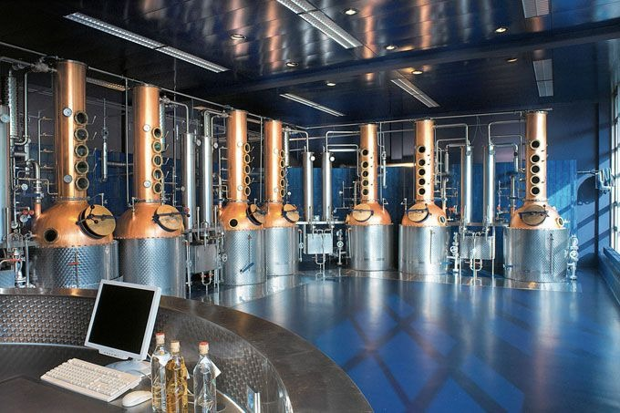
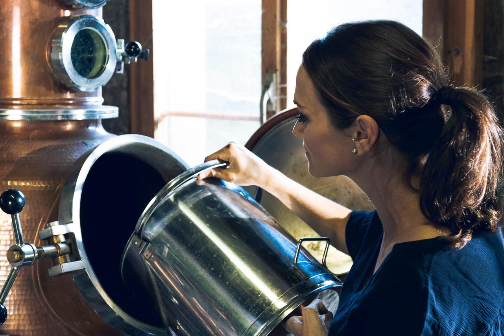
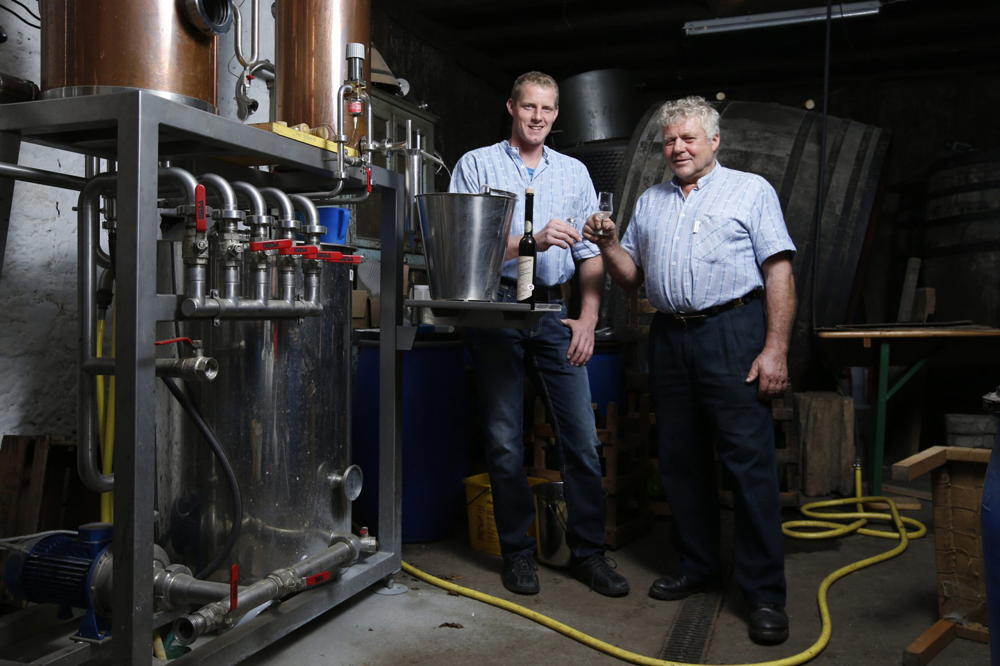
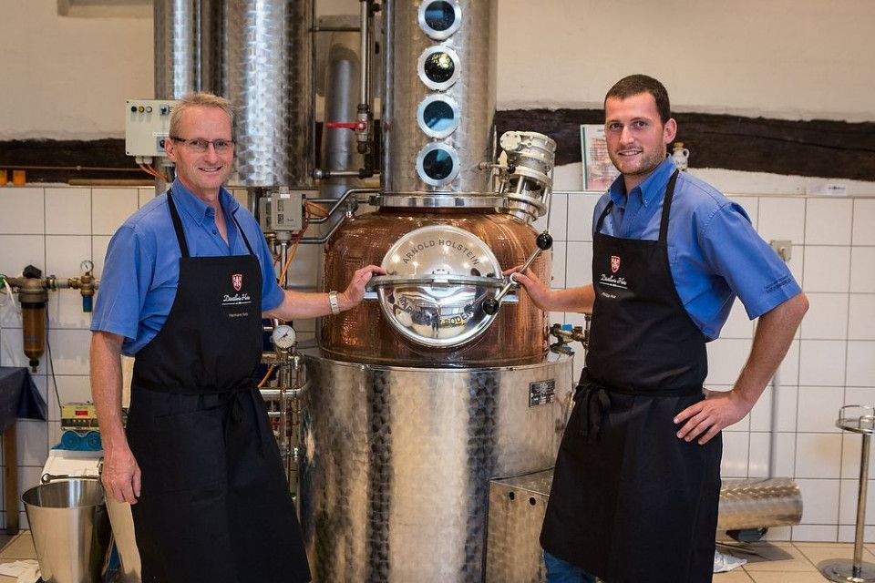
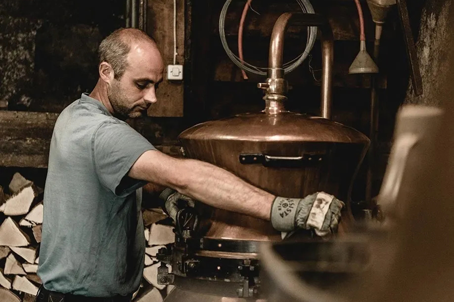
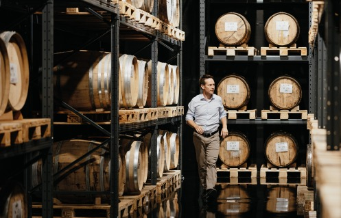

Mit Start im Kappel am Albis führt die Tour über Obst und Stein 10 Kilometer mit schönstem Ausblick ins Zugerland und die Rigi. Die reine Laufzeit beträgt 2 Stunden und 10 Minuten bis an den Zugersee. Entlang der Route machst du Halt an X Höfen, um dich kulinarisch weiterzubilden.
Alle X Höfe produzieren ihre hauseigenen (Obst)Destillate. Von Zwetschge, Williams, Träsch bis zum Zuger Kirsch ist von allem was dabei. Für jeden Hof stehen dir 3 Bons à je 2cl zur Verfügung. Du entscheidest was und wie du es degustieren möchtest. Ob pur oder mit Heisswasser, Zucker und Kaffee als Kafi Lutz.
Trinken ist das eine, doch hast du dir einmal überlegt wie Destillate hergestellt werden? Wusstest du, dass es bspw. X verschiedene Kirschsorten gibt, aus welchem alles unterschiedliche Zugerkirsche produziert werden? Auf jedem Hof kannst du einen Teil der Geschichte entdecken.

Der Hof Allenwinden ist ein biozertifizierter Landwirtschaftsbetrieb. Bis kurz vor der Pensionierung führten Vreni und Otto Ringger ihn als Milchwirtschaft. Danach lag der Fokus auf Imkerei, Obstbau sowie der Verarbeitung zu Most und Spirituosen aus der Brennerei. Seit 2016 arbeitet Tochter Christa Falkensammer mit Familie auf dem Hof und übernahm ihn 2020, stellte auf Bio um und gestaltete ihn neu.

Hermann Röllin verkörpert den Brennmeister alter Schule: ohne Marketing, mit kompromisslosem Fokus auf Kirsch. In Notikon brennt die Familie Röllin seit Generationen aus eigenen Früchten. 36 Kirschsorten von Streuobstwiesen bilden die Basis für vielfach ausgezeichnete Brände. Vater Hermann und Sohn Armin verbinden Tradition, Tüftlergeist und Biodiversität. Das Ziel ist und bleibt im Einklang mit der Natur den besten Kirsch zu schaffen.

Die Lohnbrennerei Keiser wurde 2010 von Arnold Keiser gegründet und baut auf einer langen Familientradition des Destillierens auf. Aus eigenen Früchten und Kundenobst entstehen hochwertige Obstbrände, Liköre und Whisky. Arnold Keiser verbindet handwerkliche Präzision mit Erfahrung: Von der Maische bis zum Mittellauf entsteht so ein edles Destillat, getragen von Qualität, Herkunft und Brennkunst.
Auf dem Hotzenhof in Baar entstehen seit fünf Generationen feinste Edelbrände. Seit 1882 destilliert die Familie Hotz Früchte aus eigenem Anbau, heute geführt von Vater Hermann und Sohn Philipp. Die Nähe von Frucht und Brennerei ermöglicht höchste Qualität. Tradition, Erfahrung und Experimentierfreude verbinden sich zu hochwertigen Edelbränden, die sich ideal pur geniessen lassen.

Die Brennerei Eichhof blickt auf eine über 110-jährige Familientradition zurück. Seit 1904 werden hier Früchte aus eigenem Anbau mit Sorgfalt gepflegt, handverlesen und zu edlen Bränden verarbeitet. Brennmeister Peter Hürlimann führt das Handwerk seit 2018 mit Leidenschaft weiter. Tradition, Herkunft und Respekt vor dem Rohstoff prägen die Spirituosen ebenso wie alte Techniken, etwa das Brennen mit selbst hergestellten Tresterstöckli.

ETTER steht seit vier Generationen für höchste Brennkunst. Als eine der traditionsreichsten und zugleich modernsten Spezialitätenbrennereien Europas verbindet ETTER Handwerk mit Innovation. Zertifizierte Prozesse, qualifizierte Mitarbeitende und kompromisslose Qualitätskontrollen prägen jedes Produkt. Vom klassischen Zuger Kirsch bis zu modernen Liqueuren und Whisky entsteht so zeitgemässes «Eau-de-vie» mit unverwechselbarer Handschrift.

8 Jungs mit dummen Ideen. Manchmal ensteht dabei auch was gescheites...